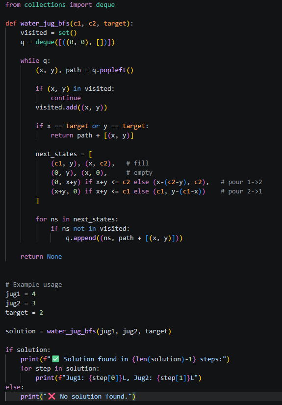
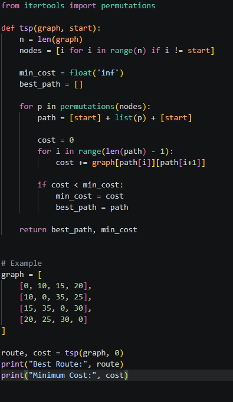
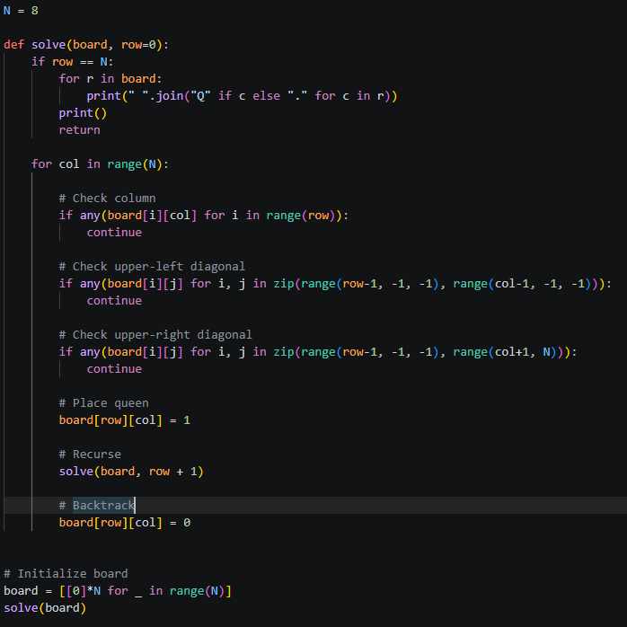

from collections import deque
def water_jug_bfs(c1, c2, target):
visited = set()
q = deque([((0, 0), [])])
while q:
(x, y), path = q.popleft()
if (x, y) in visited:
continue
visited.add((x, y))
if x == target or y == target:
return path + [(x, y)]
next_states = [
(c1, y), (x, c2),
(0, y), (x, 0),
(0, x+y) if x+y <= c2 else (x-(c2-y), c2),
(x+y, 0) if x+y <= c1 else (c1, y-(c1-x))
]
for ns in next_states:
if ns not in visited:
q.append((ns, path + [(x, y)]))
return None
jug1 = 4
jug2 = 3
target = 2
solution = water_jug_bfs(jug1, jug2, target)
if solution:
print(f"✅ Solution found in {len(solution)-1} steps:")
for step in solution:
print(f"Jug1: {step[0]}L, Jug2: {step[1]}L")
else:
print("❌ No solution found.")
N = 8
def solve(board, row=0):
if row == N:
for r in board:
print(" ".join("Q" if c else "." for c in r))
print()
return
for col in range(N):
if any(board[i][col] for i in range(row)):
continue
if any(board[i][j] for i, j in zip(range(row-1, -1, -1), range(col-1, -1, -1))):
continue
if any(board[i][j] for i, j in zip(range(row-1, -1, -1), range(col+1, N))):
continue
board[row][col] = 1
solve(board, row + 1)
board[row][col] = 0
board = [[0]*N for _ in range(N)]
solve(board)
from itertools import permutations
def tsp(graph, start):
n = len(graph)
nodes = [i for i in range(n) if i != start]
min_cost = float('inf')
best_path = []
for p in permutations(nodes):
path = [start] + list(p) + [start]
cost = 0
for i in range(len(path) - 1):
cost += graph[path[i]][path[i+1]]
if cost < min_cost:
min_cost = cost
best_path = path
return best_path, min_cost
graph = [
[0, 10, 15, 20],
[10, 0, 35, 25],
[15, 35, 0, 30],
[20, 25, 30, 0]
]
route, cost = tsp(graph, 0)
print("Best Route:", route)
print("Minimum Cost:", cost)


